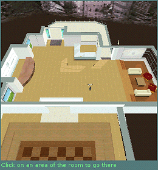

The map view provides a vantage point to see all of the destinations in Desktop World. When you log into Desktop World, the map view is open by default.

From this view you can move around Desktop World by using the manual controls (mouse and keyboard), clicking the items in the Destinations menu, or clicking the label of an area in the 3-D view. You can see where your character is located in the world, and you can watch your character as you move around in the 3-D area.
When you click a label in the 3-D view or a location in the Destinations menu, your camera view changes from map view to over-the-shoulder. To return to the map view, press either the map view button  or Overview on the Destinations menu.
or Overview on the Destinations menu.
The size of the 3-D pane can also be increased to get a closer, wider view. To increase the size of the 3-D pane, click the resize button  in the Web pane.
in the Web pane.
Details information on the Virtual Worlds Group and platform can be found at the Resource Desk. Phebe, the Resource Desk virtual receptionist, can direct you to answers to many platform questions and provide general information on the Virtual Worlds Group.
Displays information on the city of Seattle, local resources, transportation, dining, and entertainment. Morris, the Seattle Desk virtual receptionist, can inform you of landmarks and shopping centers you may want to visit while in the Seattle area. Morris can also recommend Web sites for further details.
Provides a separate area for discussing topics of interest with other visitors to Desktop World. Conversations in the Discussion Area can only be viewed by guests currently in that area of Desktop World.
Offers a variety of virtual balloons and flowers you may send to other members of Desktop World.
Includes several games just for fun and relaxation. One-person games include games such as Hangman and Connect Four. There is also a chessboard, as well as links to games on the World Wide Web.